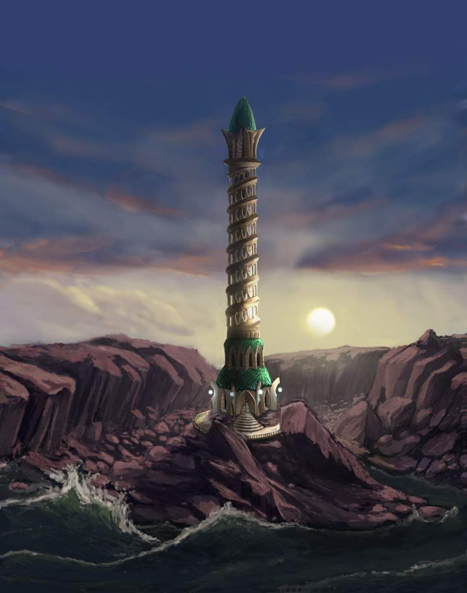
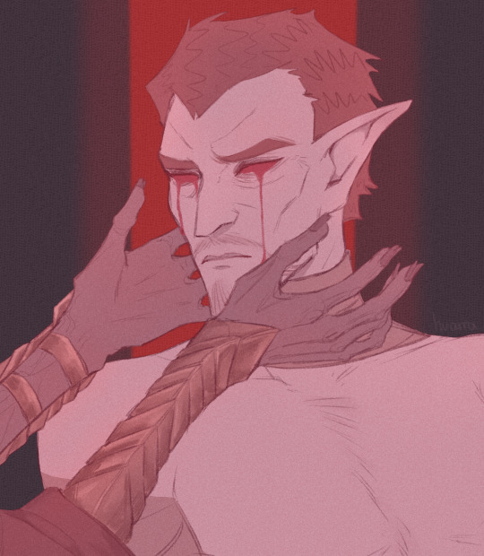
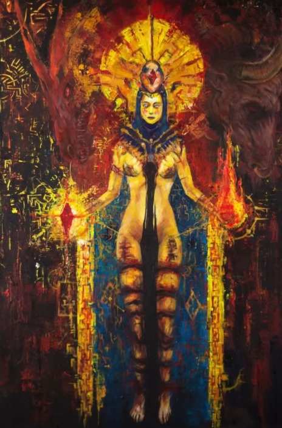
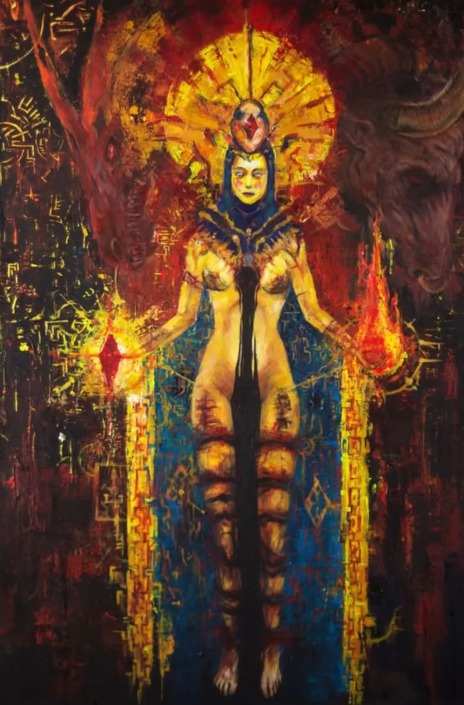
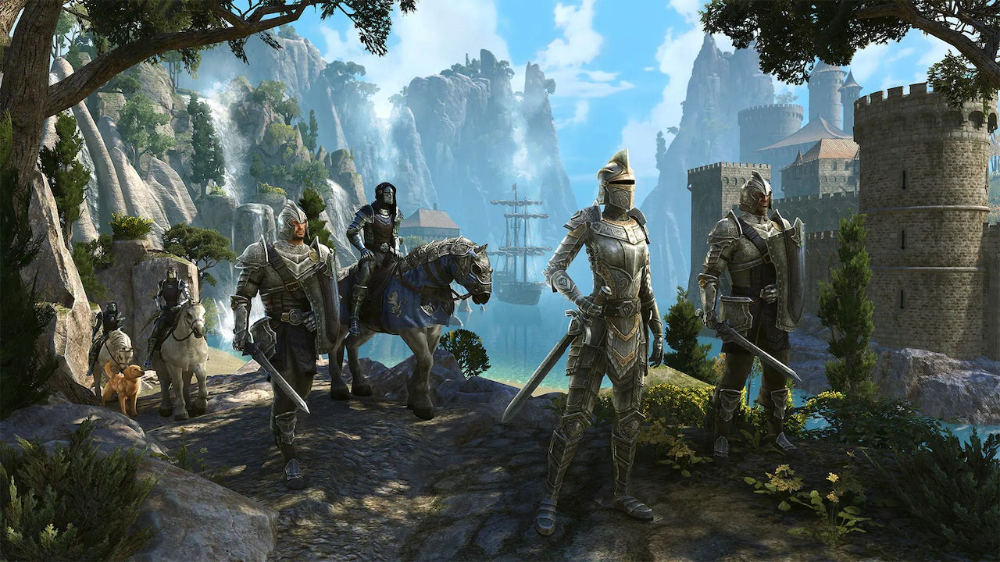
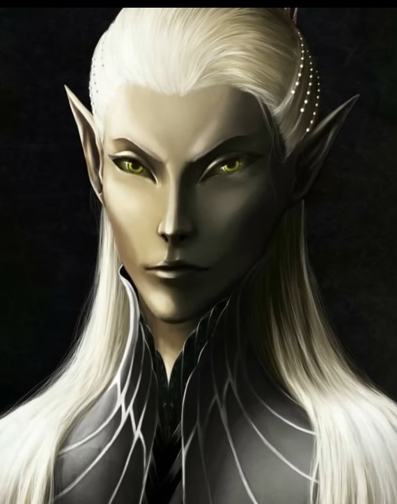

I
ERA DEL AMANECER
ERA DEL AMANECER
Dioses Primordiales
Aunque los detalles varían con cada cultura y religión, todas encajan en
que en un comienzo no había nada. El vacío lo gobernaba todo…
Con la excepción de dos entidades, 2 conciencias supremas sin una forma
clara. Estas entidades se conocen como 'Anu, El orden' la forma por
excelencia del éxtasis y el orden y 'Padomay, El cambio' la fuerza
primordial y el concepto del cambio. En otras religiones, Anu y Padomay
pueden ser conocidos por otros nombres, sin embargo siguen siendo los
dioses primordiales, antecesores de los demás dioses y de toda la
creación.
Aurbis y Et’ada
Anu
Padomay
Aurbis
Et'Ada
Anúicos

ERA DEL AMANECER
Aurbis y Et'Ada
ERA DEL AMANECER
Anúicos
MUNDUS
LORKAN
I-Et'Ada
Estos perdieron gran parte de su poder divino y con el tiempo y el paso de las generaciones serían prácticamente considerados como Mortales. A este grupo se les conocería como Ehlnofey, los primeros Ehlnofey que se materializaron en el Mundus serían los Hist, árboles inteligentes que se dicen crearon a los Argonianos. Otros Ehlnofey obtuvieron aspectos élficos llamándose así mismos como los Aldmer, aunque la fracturación de los Aldmer a lo largo de la historia dio paso a muchos tipos de razas élficas. También se especula que algunos Ehlnofey se convirtieron en formas antiguas de los Hombres-Bestia, antecesores que terminarían cambiando en los Hombres-Bestia que conocemos hoy en día. Y para terminar, el como surgieron los Humanos, está lleno de debate y no es claro. Pero se dice que pudieron ser una creación del dios Lorkan.
II-Trinimac
En algún momento de la historia se dio a luz un héroe conocido como Trinimac, este héroe sería un Altmer, uno nacido con gran poder y que fue tratado incluso por su pueblo como un dios. En esos momentos, los Et’ada que crearon Mundus, guardaban rencor y odio hacia Lorkan pero ellos estaban completamente debilitado. Lorkan para ese entonces se creía el amo del mundo y contaba con un gran ejercito bajo su mando. Un ejercito de mortales.
III-Trinimac y Lorkan
Los Et’ada dieron poder al campeón Altmer Trinimac, Akatos le entregó varios artefactos bendecidos y entonces dio comienzo una terrible batalla entre las fuerzas de Trinimac y los sectores de Aedra contra Lorkan y sus ejércitos. No se sabe cuanto tiempo duro la batalla, ni la devastación que conllevo. Pero se dice que Trinimac con la ayuda de Akatos destruyó la forma física de Lorkan y luego intentaron destruir su corazón, pero no pudieron. Les fue completamente imposible, por ello decidieron ocultar el corazón.
IV-La Montaña Roja
Ahora Lorkan había perdido su forma física, y con ello su influencia había perdido mucho poder. Cuando todas las grandes batallas y sucesos de la Era del Amanecer estaban llegando a su fin, los Et’ada Anúicos que habían ayudado a la construcción de Mundus se comenzaron a llamar Aedras, se dice que los Et’ada crearon una torre para discutir la mejor manera de proceder en Mundus. Esta torre es conocida como La torre de Adamantina y posteriormente La torre de Direnni. Lorkan está condenado al Exilio de los reinos mortales, y su corazón se encuentra en las profundidades de un volcán conocido como “La Montañia Roja”
Final de Era
En los siguientes años de la Era del Amanecer, comienzos de la siguente era. Hubieron migraciones y sucesos entre los Aldmer que dieron pie a que surgieran nuevos tipos de elfos. Ahora es el momento para que los mortales avanzen en su historia y evolución. Los Aedra se retirarán a sus propios Mundus alrededor de este nuevo reino conocido como Nirn. Ahora comienza la Era Merética, conocida por ser la Era del Elfo.
I-INICIO
MUNDUS 1
El tiempo pasó mientras los dioses tomaban su lugar y un espíritu padomáico conocido como Lorkan habló con muchos de los Et’ada para proponerles un plan, un ambicioso plan en el que él había estado pensando durante largo tiempo. Él describe su visión para la creación de un reino mortal, donde las criaturas que lo habiten tengan algo llamado “Vida y Muerte” Este reino mortal se llamaría ‘Mundus’. Lorkan explicó a los Et’ada que le escuchaban que ellos podrían reflejarse en ese plano por sí mismos y serían tratados e idolatrados como merecían. El espíritu anúico conocido como Kinaleth es la primera en aceptar el plan de Lorkan y proporciona el espacio necesario para su creación en el vacío. El Et’ada conocido como Magnus sirve como arquitecto del nuevo mundo, e incluso el mismo Akatos se unió al proyecto cuando se le dijo que él sería el Rey de este nuevo Reino.
II-ET'ADA
Muchos de los Et’ada estarían ocupados con la construcción del nuevo mundo, pero eran los espíritus Anúicos los que estaban trabajando duro en la construcción. Mientras tanto, los espíritus padomáicos habían decidido no ayudar y decidieron crear sus propios planos de existencia con las reglas que ellos decidieron y teniendo un control total de esos planos aunque esos planos serían mas pequeños y menos poderosos que el gran plano de Mundus
III-LORKAN
El plano mortal estaba cerca de ser terminado, pero Lorkan no había avisado de algo… Los Et’ada que estaban haciendo el plano mortal estaban siendo drenados de su poder y si seguían así podrían dejar de existir. Uno de los creadores de Mundus, al enterarse de ello abandona el proyecto estando ya prácticamente terminado. Ese creador era el mismísimo arquitecto Magnus, y en su huída le siguieron los conocidos como Magnage, una gran cantidad de Et’ada que estaban ayudando al proyecto. En su escape, abrieron agujeros en la tela del universo, dejando atrás una gran cantidad de magia. Creando así el Sol y las Estrellas que permiten el influjo constante de magia y con ello Mundus se vio repleto de magia.
IV-COMPLETO
El proyecto terminó, Mundus fue creado pero la mayoría de los creadores murieron o quedaron completamente paralizados por su gran sacrifico. El plano mortal, recién creado es altamente mágico y peligroso. La composición física del plano es inestable y ahora los Et’ada que habían dado su poder para tan gigantesco proyecto eran como Sombras de sus antiguos seres, por ello guardaron Odio y Resentimiento hacia Lorkan por no haber avisado de los que le podría pasar. Akatos ruega a Anus para que los ayude, pero este ya hacía tiempo que no respondía. Un grupo de Et’ada que perdieron mucho de su poder en la creación de Mundus, se crearon en el plano mortal para trabajar en seguir haciendo el proyecto viable.
En algún momento, estas entidades supremasdecidieron crear el Aurbis, también llamado el Caos o la Totalidad. Es decir, crearon el cosmos, el universo, crearon todo el vacío y abarcará todos los planos de existencia. Pero esto no fue lo único que hicieron, pues en algún momento Anu y Padmay decidieron generar nuevas conciencias a partir de ellos mismos. Estas conciencia se llamarían: “Et’ada” y aunque no eran igual que las entidades supremas, se les podrían considerar hijos y dioses. Cada uno con su propio concepto. Y la única diferenciación que habían entre los Et’ada era que unos habían nacido de Anu y otros de Padmay. Por lo que se diferencian en 2 tipos: Los espíritus y dioses Anúicos o los Espíritus y Dioses Padomáicos
ERA DEL AMANECER
Anúicos
En algún momento, estas entidades supremasdecidieron crear el Aurbis, también llamado el Caos o la Totalidad. Es decir, crearon el cosmos, el universo, crearon todo el vacío y abarcará todos los planos de existencia. Pero esto no fue lo único que hicieron, pues en algún momento Anu y Padmay decidieron generar nuevas conciencias a partir de ellos mismos. Estas conciencia se llamarían: “Et’ada” y aunque no eran igual que las entidades supremas, se les podrían considerar hijos y dioses. Cada uno con su propio concepto. Y la única diferenciación que habían entre los Et’ada era que unos habían nacido de Anu y otros de Padmay. Por lo que se diferencian en 2 tipos: Los espíritus y dioses Anúicos o los Espíritus y Dioses Padomáicos
Los espíritus Anúicos compartían principios de éxtasis y orden como la entidad Anu. Mientras que los espíritus padomáicos creían en el cambio continuo. Pero es importante aclarar que el hecho que tengan principios diferentes no los convierte obligatoriamente a ninguno de ellos en malvados o venignos. Una curiosidad es que los espíritus Anúicos serían conocidos por los mortales como los Aedra. Mientras que los espíritus padomáicos serían conocidos como los príncipes Daedra. Y aunque había muchos espíritus, cientos, miles de ellos… Solamente los mas poderosos adoptaron algún tipo de forma superior
II
ERA
MERETICA
Las razas de hombres-bestias, antepasados de Khajitas, Argonianos y Otros. Viven en comunidades por todo Tamriel. Cada uno con sus propias culturas, pero en ninguna de ellas realmente poderosa como para considerarse un imperio o similar. Los aldmer dejan su perdido continente de Almeris y se instalan en Tamriel. Estos son significativamente mas sofisticados que otras culturas y muestran un evidente poder superior. Los elfos obligan a las culturas menores de los hombres-bestia a retirarse a las selvas, pantanos y desiertos. Mientras que un clan élfico conocido como el Clan Direni descubre la torre de adamantina. La torre creada por los Et’ada y estos elfos la bautizan como ‘La torre Direni’
I-Elfos
Tamriel (Era Merética)
II-Ayleid
La isla Estivalia es tomada como la segunda cuna de los elfos, explorando Tamriel. Un aldmer conocido como Topal el Piloto explora y traza rutas marítimas por Tamriel, además de descubrir otros tipos de habitantes, como los desconocidos Hombres-Pájaro. En este tiempo los exploradores élficos construyeron torres de magos por distintas localizaciones de Tamriel, y en un momento de la historia, no demasiado más avanzada, un clan de elfos conocidos como los ‘Ayleid’ llegaron a Thyrodil para quedarse. Se dice que prácticamente acabaron con todos los Hombres-Pájaros que habitaban esas tierras salvajes y luego se adornaron con las plumas de estos Hombres-Bestia. Los Ayleid fueron ganaron poder, construyeron poderosas ciudades mágicas y la torre Blanca y Dorado. Símbolo del Imperio en un futuro. Ahora, avancemos un tiempo en la historia de la Era Merética.
III-Dwemer
Los elfos conocidos como ‘Dwemer’ se expanden. Estos eran un clan de pensamiento libre y solitario, dedicados a la ciencia, la ingeniería y la alquimia. Ellos establecen ciudades subterreanas y comunidades en distintas zonas de Skyrim, Morrowind y Páramo del martillo. Mientras tanto, en Estibalia, un grupo de Altmers liderados por el profeta ‘Veloth’ que a la vez estaba siendo persuadido por la princesa daédrica Voecia, se separaron de la mentalidad de los Altmers y dejaron Estibalia. Se hicieron llamar así mismos como los ‘Chimer’ y se fueron a la tierra prometida de Restdain, que en un futuro se llamaría ‘Morrowind’. Los Chimer prosperaron en Morrowind, y formaron planes ambiciosos y longevos, dedicados al culto de los antepasados y los buenos Daedra: Azula, Mefala y Voecia. Que les habían ayudado y enseñado a formar esta nueva sociedad.
IV-Humanos
El tiempo seguía pasando durante la Era Merética, las torres que habían construido los elfos durante el comienzo de la era merética por Tamriel estaban prácticamente abandonadas. Y fue en este preciso momento cuando los humanos aparecen en Tamriel. Se escuchaban leyendas de Hombres del Norte que estaban cruzando el mar de los fantamas para invadir el Norte de Tamriel y establecerse allí. Y estos hombres formaron pequeños asentamientos en zonas aisladas de Skyrim y Roca Alta, pero esas migraciones de hombres cada vez se hicieron cada vez más comunes. Los humanos proto-nórdicos acompañados por el Líder Nórdico llamado ‘Ysgramor’ llegaron al norte de Tamriel, a Skyrim. Y durante un tiempo se establecieron pacíficamente en aquellas tierras, incluso llegando a entablar relaciones con los elfos que allí vivían, conocidos como los Elfos de las Nieves.
V-Relaciones
Una de las relaciones elfo-humano más importantes de ese momento fue la de ‘Ahzidal’. Un estudioso aprendiz de mago que se comenzó a relacionar con los elfos de las nieves y dejó atrás a su familia por años. Para aprender todo de lo que podía de estos señores elfos con magia superior. Los elfos le enseñaron y acogieron y los años siguieron avanzando…
VI-La noche de las Lágrimas
Pero con el paso de los años las relaciones entre Nórdicos y Elfos de las Nieves comenzaron a tener problemas. Se dice que a los elfos les preocupaba la rapidez con la que los humanos aumentaban su población, además de su actitud hacia los conflictos. Pero no fue hasta que los humanos en su asentamiento de Sartal descubrieron algún tipo de poder antiguo, y los elfos, quizá asustados de ese poder, o de que en manos humanas estos no lo sabrían utilizar, decidieron atacar. Y lo Hicieron en la noche conocida como ‘La noche de las Lágrimas’ En esa noche mataron a la mayoría de los humanos del asentamiento y los demás asentamientos. Solamente sobrevivieron Ysgramor y sus 2 hijos que escaparon a Atmora jurando venganza. El mago entrenado por los elfos Azhidal también sobrevivió, y este guardó un tremendo rencor a los Elfos y se apartó para planear su futura venganza. Pues, a pesar de su destreza, no era rival para los maestros élficos.
VII-Venganza
Durante los siguientes años, Azhidal aprendió todo tipo de encantamientos, también vio a los Dwemer y otras razas de élfos para algún día completar su venganza. Isgramor preparó sus fuerzas, armó a sus hombres y regresó a Skyrim para Vengarze. Acompañado de sus 500 compñeros, aunque después llegarían muchos otros. Azhidal se enteró de que Isgramor había reunido un Ejército para enfrentarse a los élfos. Este se encontró con los Nórdicos Atmorianos y les ofreció su poder encantando las armaduras y armas de Isgramor y de Todos sus hombres. Usando los encantamientos mas fuertes que conocían. Los nórdicos contaban con sed de venganza, y una potenciación mágica que, irónicamente, era un conocimiento élfico. La guerra fue devastadora y agarró por sorpresa a los Elfos de las Nieves, los mismos fueron masacrados y, al final, acabaron pidieron refugio a sus hermanos los Dwemer.
VIII-Finales-Alduin
Despues de todos estos terribles sucesos, los nórdicos se asentaron en Skyrim y la convirtieron en su tierra. Los años siguen pasando, hasta que algo devastador ocurre a finales de la Era Merética. Los dragones, que son dioses menores, liderados por Alduin, el primogénito de Akatos reclama su dominio sobre el mundo. Los nórdicos los adoran y construyen templos dedicados a ellos, los sacerdotes dragón, que son sus sirvientes, se vuelven cada vez más tiránicos y eventualmente provocan que los humanos se revelen. Miles de hombres mueren en la rebelión, hasta que unos pocos dragones se unen a la rebelión humana y esta terrible guerra acaba con el destierro de Alduin y el derrocamiento de los Sacerdotes Dragón. Los dragones restantes están dispersos y escapan por distintas zonas de Tamriel, y su población se encuentra diezmada. Con esto finaliza la era merética
III
ERA
1
 


I Año 240
El imperio Ayleid, en Thyrodil se fortaleze. Y la torre blanca y dorada se convierte en una ciudad Estado-independiende además de ser considerada el corazón del imperio élfico Ayleid. Los gobiernos nórdicos se asientan. Los descendientes de Ysgramor son los reyes mas importantes en todo Skyrim. En el 240 de la primera era, los nórdicos entran en terribles guerras conquistando Roca Alta y Partes de Morrowind. Exceptuando Vvanderfell. En el 242 los humanos esclavizados por los Ayleid, se revelan contra el imperio Ayleid. Akathos se había comunicado con Alessya, que sería conocida como la reina esclava. Y este dios había entregado poder y el amuleto de reyes a Alessya para fomentar la rebelión. La guerra de los esclavos humanos contra sus amos Ayleid se extiende y ruge, incluso fue enviado un campeón por los dioses, conocido como ‘Pelinald, descarga blanca’ para ayudar a la rebelión. Finalmente, toman la torre de oro blanco y dorado derrotando a los Ayleid y acabando con su Imperio Élfico.
II Año 243
En el 243 de la primera era, se funda el primer reino de los humanos, bajo el gobierno de la Emperatriz Alessya. Construyen una fuerte identidad nacional a medida que gradualmente se unen más. El tiempo seguía pasando, y los conquistadores nórdicos al norte, prácticamente se hacen con toda Roca Alta. Desgraciadamente en el 266 de la primera era, la emperatriz Alessya muere, y es considerada la primera santa de Thyrodil. Se dice que en su muerte, Akhatos se apareció y usó el alma de Alessya para inbuir la gema de la joya conocida como ‘El amuleto de reyes’ Este es el comienzo del pacto entre los imperiales con Akhatos para ayudarlos a protegerse
III Año 355
Los años siguen pasando inexorablemente y es en 355 de la primera era que el clan élfico Direnni se destaca en Roca Alta, siendo la única familia gobernante de altos elfos que permanecen en tierras humanas. Estos reclaman el poder de Roca Alta a través de maniobras políticas pero finalmente lo consiguen. En el 361 de la primera era, una orden conocida como ‘La orden Alessyana’ se convierte en el factor político dominante en el imperio Alessyano, sus doctrinas se aplican en todo Thyrodil y el norte de Tamriel. Estas doctrinas cuestionan el dominio de los elfos, pidiendo la supresión de los elementos élficos dentro del panteón de los 8 divinos. Y los pocos Ayleid que quedan en tierras de Thyrodil serán perseguidos y asesinados. Mientras tanto, lejos de Tamriel, en el continente Yokudano, una raza de humanos conocida como ‘Los Guardias Rojos’ se ven dentro de una terrible guerra civil que durará mas de 300 años.
IV Año 600
El tiempo sigue pasando, y los conquistadores nórdicos que se habían hecho con parte de Morrowind, son derrotados y expulsados gracias a la unión de clanes de los Chimmer, liderados por Nerebarn y los clanes de Dwemer, liderados por Dumar. Esto trae una ligera prosperidad a Morrowind. Durante esta época, Skyrim pierde mucho el control que tiene en las otras provincias, los años siguen pasando y la orden anti-elfos, llamada la orden de Alessya, avanza hacia los territorios de altos elfos Direnni en Roca Alta. Entonces, dio comienzo a la batalla conocida como La batalla de Moros, de Lenumbria. Esta batalla fue una masacre, un desastre y completamente desoladora. El ejército de la orden Alessyana era muy superior en número y los Altmer estaban en desventaja. Ellos debían defenderse desesperadamente, y aunque parecía imposible, por la diferencia numérica que había en la batalla, finalmente los Altmer la ganaron. Y la orden Alessyana fue completamente derrotada. Pero esta batalla debilitó mucho a los señores Altmer, y estos fueron expulsados de Roca Alta unos 20 años después por los Bretones, y con ello, el gobierno Direnni terminó.
V Imperio Ayleid
Durante los siguientes años, batallas internas se dieron por todo Tamriel y Reyes murieron inevitablemente. Siguieron pasaron los años y la paz entre los Dwemmer y Chimer llegó a su fin. Pues se dio la batalla de la Montaña Roja. Esta brutal batalla tuvo consecuencias terribles para los Dwemmer, que acabaron por desaparecer al intentar manipular el poder del corazón de Lorkan en la batalla. Y, aunque los Chimer ganaron tuvieron Duras Repercuciones. Mientras tanto, en otra parte del mundo, un apocalipsis tiene lugar. El hundimiento, destrucción de un continente. El continente Yokudano. Yokuda sufría de una terrible guerra entre los humanos guardias rojos y unos elfos conocidos como ‘Elfos de la mano izquierda’. Y durante la batalla se dice que se utilizo un tipo de magia de la tierra que provocó un cataclismo que hundió el continente a excepción de unas pocas islas.
VI Año 808
Sobre el 808 de la primera era, muchos refugiados guardias rojo huyeron y llegaron a Páramo del Martillo en Tamriel, estos entraron en múltiples guerras para reclamar Páramo del Martillo como su patria, inclusos tuvieron grandes guerras contra los Orcos, que los acabaron expulsando al norte, donde los Orcos fundaron su gran ciudad conocida como Orcinyn. Pero los orcos no tienen suerte y durante los siguientes 30 años tuvieron una guerra terrible contra los Bretones, que habían ganando poder después de la retirada de los Direnni. Finalmente, los orcos fueron expulsados otra vez.
VII Año 1029
Roca alta gana poder y funda poderosas ciudades y se recupera de las guerras del pasado. Es en el 1029 de la primera era, cuando Roca Alta se acaba uniendo al imperio Alessyano. Una raza de hombres bestia conocida como los Esload liberan la peste Traciana en todo tamriel. Esta brutal plaga devasta a más de la mitad de la población de tamriel. Provocando un verdadero drama, por ello en el 2060 de la primera era, una flota masiva compuesta por los barcos de Todas la Provincias de Tamriel, navegan en contra de los Esload. Por primera vez en la historia se habían unido todas las razas en un objetivo común. La guerra fue aplastante, los Esload no tenían oportunidad, incluso sus islas, su reino fue completamente hundido en las aguas. La alianza de todas las razas duraría poco, y después de este suceso todo volvería a la normalidad. Y en los siguientes años, los conflictos y guerras regresan a Tamriel.
VIII Año 2703
Pasan cientos de años y es en 2703 de la primera era que una terrible raza llamda ‘Siatchi’ de un continente lejano a Tamriel, conocido como ‘Akhabir’ se deciden a invadir Tamriel, y después de años de batallas, finalmente Tamriel en una resistencia liderada por ‘Reman Thyrodil’ logran detener la invasión Akhabir, eso sí, sufriendo infinidad de pérdidas y no pudiendo evitar que los Siatchi de Akhabir se ganen puestos políticos importantes en Tamriel
IV
ERA
2
ERA II
En el comienzo de la segunda era, se conmemora la desaparición de la
Dinastía Reman, y un oficial Akagiri, Siaechi, llamado ‘Versidue Shaie’ se
encarga de la administración del segundo imperio. Avanzan los años de la
segunda era y es en el 230 cuando el poderoso Mago Altmer ‘Vanus
Galerion’ forma el primer gremio de magos, a pesar de la negativa de la
orden Sichi, a llevar magia avanzada a otras regiones fuera de la isla
Estivalia.
~
Poco tiempo después, se da una situación complicada en Tamriel, pues
una triada de príncipes daédricos compuesta por Clavicus Vibe, Mefala Y
Nocturnal, hacen un trato con un mago Esload llamado ‘Kathora’ para
atacar la torre de cristal de Estibalia y robar un artefacto que se encuentra
en la misma. Y aunque años después, la orden Sigic logra solucionar la
situación, realmente el suceso casi provoca una gran catástrofe.
Durante los siguientes años de la segunda era, se fundan reinos y se dan
batallas menores. El siguiente suceso importante es el asesinato del oficiar
Akhabiri que dirigía el imperio ‘Versidue Sagie’
La administración del imperio pasa a las manos de ‘Savirien Chorak’ otro
oficial Akhabiri también Siaeci.
Pasarán casi 100 años de mandato Akhabiri hasta que este nuevo oficial
es asesinado y con ello termina el segundo imperio y la influencia de
Akhabir. Es por esta época, por el 352 de la segunda era, cuando se cree
que se fundo la hermandad oscura.
En los siguientes años, se dan batallas por todo Tamriel y ninguna de ellas
afecta significativamente al continente, por eso pasamos al 560 de la
segunda era, cuando tiene lugar un terrible suceso. Un suceso conocido
como la ‘Gripe Knahaten’ golpea el norte de la ciénaga negra, causando
muchas muertes y llevando a la raza de hombres-bestia burpinos
conocidos como los ‘Limotith’ a la extinción y también casi desaparecen
los humanos de la ciénaga negra conocidos como los ‘Cotorinci’
Extrañamente los Argonianos eran inmunes a la gripe y mucha gente
pensó que ellos eran los responsables. Esta terrible situación continuo hasta
alrededor del 603 de la segunda era.
Despues de estos sucesos, se dieron los pactos de dagas de batalla del
pacto de Dagerfall, donde después de años de batallas entre bretones,
orcos y guardias rojos, se decide firmar un pacto de paz donde el rey
Emeric de Roca Alta da derecho a los orcos para reestablecer Porsinium,
los años siguen pasando y se da una segunda invasión de Akhabir. Un
ejercito terrible liderado por el Kamal ‘Adam Soum dir Kamal’ Aterriza en el
noreste de skyrim hasta que los nórdicos deciden formar una unión con los
Dummer y, ayudados por los Argonianos, lograron expulsar a los Akhabiri
de Tamriel. Aunque también hay otra versión que fue el propio Vivec que
inundó las tierras con un terrible tsunami que arraso las fuerzas Akhabiri.
Tras esta invasión Akhabir, se forma el pacto de ‘Corazon de Ébano, el
cual no sería muy duradero pero se mantendría un tiempo. El pacto lo
formaban: Nórdicos, Dunmers y Argonianos. En los siguientes años se siguen
teniendo terribles batallas por tamriel, por desgracia la segunda era es una
época de desolación. Después de una rebelión militar, ‘Varen Aquilarios’
se convierte en el emperador de Tamriel, y el se encarga de formar a un
grupo de legendarios personajes conocidos como ‘Los 5 compañeros’ con
el objetivo de recuperar el Amuleto de Reyes para así convertirse en el
emperador por derecho. Los 5 compañeros serían: El propio Varen, La
semi-gigante ‘Liris sangre de titan’, El héroe guardia rojo ‘Sai Sahan’, El
mago imperial ‘Apnur Saphn’, y el poderoso mago ‘Mani Marco’.
Alianza Ébano
Alianza Ébano
Estos personajes se embarcaron en búsqueda del Amuleto de Reyes y durante
el viaje Mani Marco afirmó que con el amuleto de reyes se podría hacer un
ritual para persuadir a Akathos y que con ello se convirtiera a Varen en un
Sangre de Dragon, dándole así el título de Emperador por Derecho.
Los 5 compañeros, con el tiempo lograron recuperar el Amuleto de Reyes, pero
Mani Marco traiciona a Varen durante su intento de usar el Amuleto de Reyes
para ser el Sangre de Dragon, Mani Marco corrompió el ritual y rompió el
antiguo pacto que Akathos formó en el pasado con Santa Alessya. Una de las
cosas que hacía este pacto era proteger mundus de la influencia daédrica.
Varen desaparece en una explosión de margia arcana y el príncipe daédrico
‘Molaf Val’ aprovechó el momento de debilidad de mundus para invadir el
plano mortal lanzando sus tropas de daedras y provocando la devastación.
Pero este plan llevaría algo de tiempo y se haría cuidadosamente
Después de la desaparición de Varen Aquilarios, su mujer Clibia Tharm se
convierte en la emperatriz reciente, mientras tanto en la isla Estivalia, Aydin
es coronada como la reina de Alinold y de toda Estibalia. Después de la
coronación de la reina Aydin, Estibalia tenia muchos problemas internos, la
reina los estaba solucionando y buscando aliados en las provincias de
Elsweyr y Bosque Valen. Formando así el primer dominio Almeri. Todo esto
estaba pasando mientras el plan de dominación de Molaf Val avanzaba
lentamente, la guerra de los tres estandartes dio comienzo.
Clibia Tharm
El dominio Almeri, formado por los Altmer, Osmer y Khajitas. El pacto de
corazón de Ébano, formado por Nórdicos, Dunmer y Argonianos y el Pacto
de Dagerfall formado por Guardias Rojos, Bretones y Orcos entraron en
una terrible guerra para apoderarse del trono de rubí, ósea el trono de
Thyrodil y con ello ganar mucho más poder. El dominio busca reestablecer
el dominio de los elfos sobre Tamriel para protegerlo del descuido de las
razas más jóvenes e inexpertas. El pacto de ébano busca restaurar el
segundo imperio y el pacto de Dagerfall busca la independencia. Lo que
ellos no sabían era que el príncipe daédrico Molaf Val estaba
aprovechando esta terrible situación de guerra para dar comienzo a su
plan. El príncipe intentó llevarse el plano mortal a su plano, los daedras
invadieron Tamriel y obligaron a todas las alianzas de tamriel olvidarse de
sus problemas y enfrentarse a su invasión. Al final, después de años,
lograron evitarla uniendo sus fuerzas
En los siguientes años, varios príncipes daédras también intentan cometer
actos contra los mortales en Tamriel, pero estos logran salvarse aunque no
sin pérdidas.
Otro suceso muy importante será por la liberación de Dragones que se
escondieron hace miles de años en las salas de los Colosos en Elswyr. Estos
dragones intentan conquistar otra vez Mundus, y aunque casi lo
consiguen, mortales logran evitar este apocalipsis.
Durante el 828 de la segunda era, se dice que se da el nacimiento de
‘Tyber Septim’ y poco después se reforma el Dominio de Altmer. Pasaron
los años y el general Tyber Septim maduró y comenzó una serie de
conflictos que resultaron en la unificación de todo Tamriel, gracias a
hacerse con el dios mecánico ‘Nudidium’ marcando así los años finales de
la segunda era
Tyber Septim
V
ERA
3
Era III
*
Después de unos años de paz, el emperador ‘Tyber Septim’ muere por
causas naturales a la edad de 108 años. Después de el, su nieto ‘Pelagio’
es coronado, y en los siguientes años se da una sucesión de muertes y
ascensos de los siguientes emperadores. Todos línea de sangre de Tyber
Septim. Tamriel está disfrutando de una etapa de paz que hacía mucho
que no tenía. Aunque en el segundo siglo de la tercera era comienzan a
ocurrir algunos sucesos importantes como una terrible batalla entre
Maormer y Altmer de Estibalia.
Los emperadores seguían sucediéndose, pero era inevitable que las
guerras internas se comenzasen a dar dentro del imperio, como la guerra
del diamante rojo, que fue una guerra donde los 3 hijos sobrevivientes del
emperador ‘Pelage II’ se enfrentaban entre si, ‘Potema’, ‘Sephoros’, y
‘Magnus’. Esta batalla fue brutal, Potema estaba planeando obtener el
trono para ella y su hijo, ‘Uriel III’. Finalmente Uriel III fue coronado
emperador, aunque con el tiempo murió y fue Sephros I coronado el
siguiente.
Los años seguían pasando, y los emperadores seguían cambiando. Y aunque
ocurren batallas y sucesos durante los siguientes años, pasaremos a un
momento particular de la historia. El momento donde Uriel V es coronado en el
268 de la tercera era. Uriel V cambia la percepción de un imperio débil a
embarcarse en invasiones a la de un imperio fuerte que se atreve con todo
tipo de guerras para ganar poder y extensión territorial. Con el paso de los
años, en el 288 de la tercera era, Uriel V prepara la flota mas grande reunida
en la historia registrada del imperio, y con ella se lana a invadir el Continente
de Akhabir. Tardaron en llegar a las tierras de Akhabir 6 semanas, y Uriel V
obtuvo varias batallas victoriosas, aunque finalmente es derrotado en el
campo de batalla. En aquel momento, su hijo de 5 años se convierte en el
emperador ‘Uriel Septim VI’ y con el paso del tiempo, los hombres mueren y eso
pasó con Uriel VI, que, a diferencia de su padre, no fue un líder militar y
conquistador, fue más político que otra cosa.
Uriel V Muerte
Después de él, vinieron varios emperadores hasta que llego uno de los
emperadores más conocidos de la saga: ‘Uriel Septim VII’ que fue
coronado en el 368 de la tercera era. Su reinado tuvo conflictos y guerras,
pero el gran problema que sufrió este emperador fue cuando el mago de
batalla, llamado ‘Yagar Thar’ encerró al emperador en un plano de
Oblivion y luego lo suplantó, haciendose pasar por el emperador por los
siguientes años. Después siguieron varias batallas donde Yagar Thar era
tratado como el emperador, no fue hasta que 10 años después que Yagar
Thar fue derrotado por el campeón eterno, Uriel Septim VII fue salvado y
regresó al trono
Uriel Septim VII
Yagar Thar
En los siguientes años se dieron acontecimientos terribles, el tribunal de
nuevos dioses vivientes de Morrowind pierde 2 de las herramientas de
Kagrenath ante los secuaces de Thag’Ozur. Thag’Ozur con el tiempo gana
poder mientras el trinubal lo pierde y este crea una plaga para intentar
asolar todo Morrowind. Al final, un héroe concodo como ‘Nevebarino’
derrota a Thag’Ozur recibiendo toda la ayuda posible y con mucho
esfuerzo, y aunque hay varios sucesos importantes entre medias de lo
sucedido con Nevebarino, hay un suceso principal que causaría un caos
en todo Tamriel, y solamente ocurriría 6 años después de lo sucedido con
Thag’Ozur
Thag’Ozur
Tamriel no descansa, el emperador Uriel Septim VII y sus herederos son
asesinados por una secta daédrica conocida como ‘El Amanecer Mítico’,
con ello las puertas de Oblivion se abren y una terrible invasión daédrica
da comienzo a nivel global. Esta invasión terrible es liderada por el príncipe
daédrico de la destrucción ‘Merunes Deigon’. Thyrodil sufrió grandes
daños, la ciénaga negra se pudo defender y repeler a los Daedra. Los
Altmer de Estibalia repelieron a los Daedra, gracias a una orden militar
conocida como los ‘Thanmor’ pero sufrieron la pérdida de la torre de
cristal. De otras partes de Tamriel se sabe menos, pero la invasión afectó
prácticamente a todo el mundo.
Al final de la crisis, el campeón de Thirodil ayuda a Martin Septim a liderar
una última batalla en Bruma. Martin era el último descendiente de la
sangre Septim, y además era un Sangre de Dragón. La batalla era terrible
y se perdieron demasiadas vidas, al final el propio Merunes Deigon
apareció en Tamriel, concretamente en Thyrodil devastando parte de la
ciudad imperial, y Martin imploró ayuda a Akathos. Akathos le concedió la
ayuda y sacrificando la vida de Martin, lo usó como avatar para poder
aparecerse en el plano mortal, donde un enfrentamiento entre dioses tuvo
lugar. Akathos, el daedra del tiempo, contra Merunes Deigon, el príncipe
daédrico de la destrucción. La batalla hizo temblar los cimientos del
mundo, pero al final Akathos pudo expulsar a Deigon de plano mortal. Esta
batalla se tomó muchas víctimas, la propia vida de Martin Septim y la
pérdida del Amuleto de Reyes.
Merunes Deigon
Parecía que después de lo sucedido con el príncipe daédrico Merunes todo
estaría en paz, al menos durante un tiempo aunque ahora sin emperador y el
imperio estaría dirigido por el consejo de Ancianos. Aunque lo que nadie sabía,
era que un antiguo enemigo de la humanidad conocido como ‘Humarin, el
Impetuoso’ había recuperado fuerzas para volver a Mundus, entonces otra
terrible invasión dio lugar por parte del semidios acompañado por los Daédras
Auronanos de Meridia. El campeón de Kabath estaba especializado contra la
lucha de los Daedra y había luchado en contra de las fuerzas del propio
Merunes Deigon, estaba avisado de la profecía. Este comenzó un peregrinaje,
y el peregrinaje lo convirtió en el campeón de los divinos, acompañados por
las bendiciones de los divinos pudo derrotar al semidios. Se dice que el
campeón de Kabath, o el campeón de Thyrodil acabó viajando al plano
daédrico de Seovorath, donde ayudó al príncipe daédrico a resolver un
problema legendario y que acabó por convertir al campeón en el propio
Príncipe Daédrico de la Locura. Después de todos estos terribles sucesos, se da
el final de la tercera era, y comienza la cuarta era
Pelea contra un Semidios
VI
ERA
4
Era IV
ø
La cuarta era comienza con drama, el año 5 sería conocido como ‘El Año
Rojo’, pues la montaña roja de Vvanderfell en Morrowind entra en
erupción provocando que Vvandefell sea devastada por desastres
naturales. En los siguientes años el imperio comienza a perder poder, los
dominios imperiales en la ciénaga negra se separan del imperio y muy
pronto es seguido por los dominios imperiales en Elswyr. Los Argonianos
aprovecharon la erupción de La Montaña Roja y el debilitamiento de los
Dunmer para invadir Morrowind, y aunque al comienzo la campaña tuvo
un relativo éxito, fueron detenidos por las Fuerzas Dunmer de la Casa
Redora.
Después siguieron pequeñas batallas por Tamriel que el imperio apenas
podía detener, pues estaba tan débil que no podían tener la paz. No fue
hasta que Tyrus Mere, un señor de la guerra, capturó la ciudad imperial y
fue coronado Emperador hasta que el imperio ganó y recuperó algo de
poder. Pero poco tiempo después, en la isla Estibalia, los Thanmor, la orden
mad
militar que salvo a los Altmer de la crisis de Oblivion, tomaron Estibalia y
cambiaron el nombre de las Islas a Alimor.
Pocos años después, el domino de Altmer se une con Bosque Valen y se
separaron por completo del imperio
En el año 98 de la cuarta era, las 2 lunas de Nirn, ‘Mase’ y ‘Segunda’
desaparecen por ninguna razón. Quizas por algún tipo de magia o por
procesos atmsoféricos que impiden su visualización. Los Thalmor
aprovechan esta situación y restablecen la normalidad con las lunas, en
este caso los Khajitas los ven como héroes y se acaban uniendo al nuevo
dominio que los Thalmor estaban formando. Aunque hay teorías que
afirman que todo el suceso de las lunas fue planeado por los Thalmor para
manipular a los Khajitas y así ganárselos como Aliados. De todas formas,
ninguna de las dos esta 100% confirmada.
Lunas
Tiempo después ocurren varias batallas por Tamriel, pero uno de los
grandes sucesos de la cuarta era está por comenzar. En el 168 de la
cuarta era, el emperador ‘Titus Mere II’ asciende al trono y el emperador
recibe Ultimatum por parte de los Thalmor. Este Ultimatum pide que se
prohíba el culto a Talos, o sea, en vida Tyber Septim, el cual fue tratado
como un Dios después de su muerte y los Thalmor no lo aceptan como
una deidad. Solamente es un hombre, un hombre que murió por la edad.
Los Thalmor querían partes de Páramo del Martillo y una cantidad de
Dinero como Impuestos, y entre otras cosas también pedían la retirada por
completo de las cuchillas de las tierras élficas. El emperador se negó por
completo y esto ocasionó el suceso conocido como ‘La Grán Guerra’
Los ejércitos del dominio se dividen e invaden las provincias imperiales de
páramo del martillo y Thyrodil, la parte que del ejército que invade Thyrodil
estaba liderad por el general Thalmor ‘Lord Ganiril’ mientras que la parte
del ejército que invade Páramo del Martillo está liderada por la General
‘Lady Aranelia’
La batalla duraría años y gran parte del territorio sur de Páramo del Martillo
sería conquistado, mientras que la Ciudad Imperial es completamente
devastada y saqueada por las fuerzas Altmeri.
Ganiril
Aranelia

Titus Mere II huye hacia el norte para reagruparse, dejando la ciudad
imperial indefensa durante más de 1 año. Mientras tanto, los guardias rojos
se resisten a la conquista Altmeri y a pesar de haber perdido territorios y
muchísimas vidas, logran resistir y expulsan a esa parte del ejército Altmeri
de sus tierras. Aunque los daños sufridos son inimaginables.
Por otra parte, daría comienzo a la batalla por el Anillo Rojo, donde fue
cuando Titus Mere II después de haberse retirado por 1 año, decide volver
y reconquistar la ciudad imperial. La batalla vuelve a rugir y toma por
sorpresa a los confiados Altmer, al final los Imperiales reconquistan su
ciudad y pudieron alegrarse por su victoria. Pero pronto se darían cuenta
que estaban tremendamente debilitados, y no podían seguir la guerra. Sus
fuerzas diezmadas, su economía destrozada, por ello Titus Mede II busca
negociar con el dominio de Altmer y poner fin a la guerra.
Pero para poner fin a la guerra, el imperio tuvo que aceptar el concordato
Blanco y Dorado, un concordato donde los Altmer obligan a los imperiales
a prohibir el culto a Talos en Todo el Imperio, a pagar impuestos y a ceder
tierras de Páramo del Martillo, entre otras cosas. Los guardias rojos se
negaron a ceder sus tierras y abandonaron el imperio, por lo que siguieron
en guerra con el dominio de altmer. Mientras que los nórdicos se sienten
insultados al verse obligados a no poder adorar a Talos, su héroe dios. Por
ello, un guerrillero llamado ‘Ulfryk, capa de la tormenta’ comienza una
revolución contra el imperio. Él no toleraría que esto pudiera pasar, al final
el gran rey de Skyrim, ‘Torig’ es asesinado por Ulfryk y la rebelión de los
capa de la tormenta comienza a suponer un problema para el debilitado
imperio. La guerra civil de Skyrim habría dado comienzo.
Ulfryk